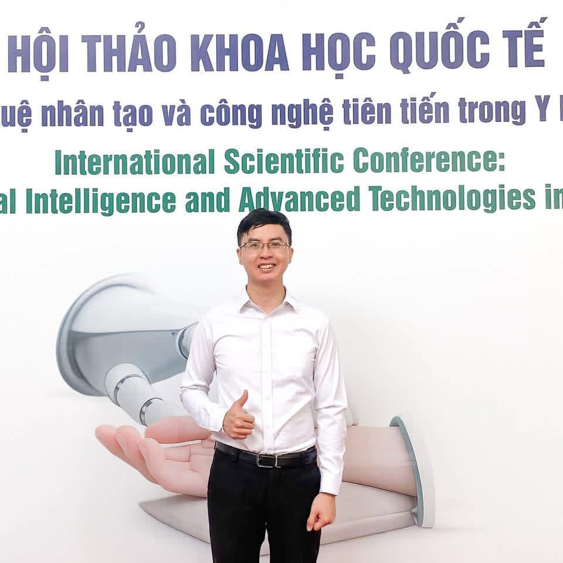

Trong nhiều năm làm việc trong lĩnh vực Y học cổ truyền (YHCT), mình thường nghe những câu hỏi như: "Y học cổ truyền có còn phù hợp trong thời đại công nghệ và y học hiện đại phát triển nhanh như hiện nay không?" Hay "Tương lai của YHCT sẽ đi về đâu?".
Có lẽ trước đây, câu trả lời vẫn còn là những dự báo. Nhưng sau những chuyến công tác gần đây tại tuyến y tế cơ sở, mình cảm nhận rõ rằng tương lai đó đang diễn ra ngay trước mắt.
Đợt vừa rồi, mình được bệnh viện giao nhiệm vụ xuống các trạm y tế để hỗ trợ triển khai mạng lưới YHCT, hướng dẫn và chuyển giao một số kỹ thuật điều trị không dùng thuốc như châm cứu, xoa bóp bấm huyệt. Chuyến đi không chỉ là một nhiệm vụ chuyên môn mà còn cho mình cơ hội quan sát những thay đổi rất thực tế của hệ thống y tế cơ sở.
Đi thực tế rồi mới thấy, nhiều trạm y tế ngày nay đã khác rất xa hình dung của nhiều người. Không ít đơn vị được đầu tư khang trang, có phòng khám YHCT riêng, được trang bị máy điện châm, đèn hồng ngoại, kim châm cứu, cốc giác hơi và các phương tiện phục vụ điều trị cơ bản. Quan trọng hơn, đội ngũ nhân viên y tế cơ sở ngày càng được đào tạo bài bản hơn về các kỹ thuật YHCT và phục hồi chức năng.
Mình vẫn nhớ hình ảnh những cụ ngoài 60–70 tuổi lần đầu tiên được trải nghiệm châm cứu ngay tại trạm y tế xã. Sau buổi điều trị, các cụ cầm theo túi thuốc đông y hay chai cồn xoa bóp mang về với gương mặt phấn khởi vì đỡ đau hơn, lại không phải đi xa mà vẫn được hưởng đầy đủ quyền lợi bảo hiểm y tế. Đó là những khoảnh khắc rất giản dị, nhưng giúp mình cảm nhận rõ giá trị của việc đưa dịch vụ YHCT đến gần người dân.
Một trường hợp khác để lại nhiều ấn tượng là một bác bị tai biến mạch máu não, liệt nửa người. Gia đình làm nông nên mỗi lần đưa bác lên bệnh viện tuyến trên điều trị đều rất vất vả. Từ khi trạm y tế triển khai điều trị YHCT, bác có thể đến châm cứu hằng ngày ngay gần nhà. Mỗi lần gặp lại, mình đều thấy bác nhấc chân tốt hơn một chút, bước đi vững hơn một chút. Có thể với người ngoài đó chỉ là những tiến bộ nhỏ, nhưng với người bệnh và gia đình, đó là hy vọng được nhìn thấy từng ngày.
Chính những hình ảnh ấy khiến mình nghĩ nhiều hơn về định hướng phát triển của YHCT trong giai đoạn mới.

Nghị quyết số 72-NQ/TW của Bộ Chính trị về một số giải pháp đột phá nhằm tăng cường bảo vệ, chăm sóc và nâng cao sức khỏe nhân dân đã xác định rõ yêu cầu "phát huy thế mạnh của y học cổ truyền", đồng thời nâng cao năng lực y tế cơ sở, chăm sóc sức khỏe từ sớm, từ xa và ngay tại cộng đồng. Nghị quyết cũng nhấn mạnh việc đầu tư cho trạm y tế cấp xã, tăng cường nguồn nhân lực và hoàn thiện thể chế đối với lĩnh vực YHCT. Đây được xem là một trong những định hướng chiến lược của ngành y tế trong giai đoạn tới.
Điều đáng chú ý là lần này YHCT không được nhìn nhận như một lĩnh vực độc lập hay thay thế y học hiện đại. Thay vào đó, định hướng xuyên suốt là kết hợp YHCT với y học hiện đại, tận dụng thế mạnh của cả hai nền y học để nâng cao hiệu quả điều trị. Đây cũng là xu hướng đang được nhiều quốc gia châu Á như Trung Quốc, Hàn Quốc hay Nhật Bản theo đuổi trong nhiều năm qua.
Qua những gì mình quan sát được tại tuyến cơ sở, mình nhận thấy YHCT đang dần chuyển từ vai trò hỗ trợ sang trở thành một phần quan trọng của hệ thống chăm sóc sức khỏe ban đầu. Những kỹ thuật như châm cứu, xoa bóp bấm huyệt, giác hơi hay dùng thuốc cổ truyền ngày càng được triển khai rộng rãi tại các trạm y tế, giúp người dân tiếp cận dịch vụ chăm sóc sức khỏe ngay gần nơi sinh sống. Với các bệnh lý phổ biến như đau cổ vai gáy, đau thắt lưng, thoái hóa khớp hay di chứng tai biến mạch máu não, YHCT đang cho thấy nhiều lợi thế về tính thuận tiện, khả năng duy trì điều trị lâu dài và giảm gánh nặng cho tuyến trên.

Bên cạnh đó, YHCT cũng đang bước vào giai đoạn phát triển dựa trên khoa học và bằng chứng nhiều hơn. Nếu trước đây hiệu quả điều trị chủ yếu được ghi nhận qua kinh nghiệm thực tiễn, thì hiện nay ngày càng có nhiều nghiên cứu trong và ngoài nước đánh giá tác dụng của châm cứu, điện châm, các phương pháp điều trị không dùng thuốc cũng như các bài thuốc cổ truyền bằng những tiêu chuẩn nghiên cứu hiện đại. Đây là xu hướng tất yếu để YHCT khẳng định giá trị của mình trong hệ thống y tế hiện đại.
Một xu hướng khác mà mình đặc biệt quan tâm là sự hiện diện ngày càng rõ nét của YHCT trong các lĩnh vực phục hồi chức năng, y học thể thao và quản lý bệnh mạn tính. Khi tuổi thọ trung bình tăng lên, nhu cầu không chỉ dừng ở điều trị bệnh mà còn là phục hồi vận động, duy trì chất lượng sống và nâng cao sức khỏe lâu dài. Đây chính là những lĩnh vực mà YHCT, đặc biệt là các phương pháp điều trị không dùng thuốc, có nhiều tiềm năng để phát huy thế mạnh và tạo ra giá trị khác biệt.
Phát biểu về định hướng phát triển đất nước trong giai đoạn mới, Tổng Bí thư Tô Lâm nhiều lần nhấn mạnh yêu cầu xây dựng một hệ thống y tế hiện đại, công bằng, hiệu quả và lấy người dân làm trung tâm. Trong bức tranh đó, YHCT không đứng ngoài cuộc mà trở thành một phần của hệ thống chăm sóc sức khỏe toàn diện, đặc biệt ở tuyến cơ sở và trong chăm sóc sức khỏe ban đầu.
Sau những chuyến đi thực tế, điều khiến mình lạc quan không phải là những con số thống kê hay các kế hoạch trên giấy. Điều khiến mình tin tưởng nhất chính là hình ảnh người dân được tiếp cận dịch vụ YHCT ngay gần nhà, những bệnh nhân phục hồi từng bước nhờ được điều trị liên tục và những cán bộ y tế cơ sở đang âm thầm đưa các chủ trương lớn vào cuộc sống hằng ngày.
Có lẽ tương lai của YHCT không nằm ở những khẩu hiệu lớn lao. Nó nằm ở việc mỗi người dân, dù ở thành phố hay vùng ngoại thành, đều có cơ hội tiếp cận các dịch vụ chăm sóc sức khỏe an toàn, hiệu quả và phù hợp ngay tại nơi mình sinh sống. Và trên hành trình đó, Y học cổ truyền vẫn sẽ có một vị trí riêng, không phải vì truyền thống, mà vì những giá trị thực tiễn mà nó tiếp tục mang lại cho người bệnh hôm nay.